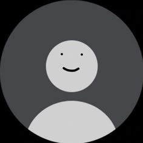

PORTAFOLIS LLIBRERIES 3D
Les llibreries 3D en JavaScript han revolucionat la creació d'entorns virtuals i experiències immersives a la web. A-Frame i MindAR són dues de les més destacades, cadascuna amb funcionalitats específiques per a diferents tipus de projectes.
Gràcies a aquestes eines, els desenvolupadors podem dissenyar des d'experiències interactives senzilles fins a aplicacions immersives avançades que combinen realitat virtual, realitat augmentada i interacció 3D. Aquestes tecnologies han convertit el web en una plataforma cada cop més potent per a la creació de contingut digital innovador.
Aquest portafolis explora aquestes llibreries en profunditat i presenta els projectes desenvolupats amb cadascuna d'elles.
Visita el GitHub d'aquest projecteUna aproximació a les llibreries 3D
Un petit exercici amb A-Frame per testejar l'aplicació en diversos dispositius: pantalla d’ordinador, format mòbil i ulleres de Realitat Virtual.
Zombi 3D
Projectar un disseny 3D d’un zombi ballant.
On és en Wally?
Cerca en Wally al mapa entre els zombis.
Model 3D de la màscara i el barret
Màscara de la pel·lícula *El amor de Gata* i barret de *Harry Potter*.

Recorregut de pintures
Pintures famoses exposades en un recorregut virtual.
La casa abandonada
Una casa abandonada amb diferents objectes 3D.
Projecte en construcció
...
Joc d'esteroides
Diferents figures 3D per disparar amb el ratoli
Pong
Joc Pong Moviment amb W S i les fletches
Marc Cepeda Vivas
Estudiant de SMIX del cicle formatiu de Grau Mitjà en Sistemes Microinformàtics i Xarxes.
M'apassiona la tecnologia i la informàtica, especialment tot el que té a veure amb la configuració, el manteniment i la seguretat dels sistemes informàtics.
Durant la meva formació, he adquirit coneixements en hardware, xarxes, sistemes operatius i administració de servidors. M'agrada treballar en equip i solucionar problemes tècnics de manera eficient. Estic motivat per continuar aprenent i aplicar els meus coneixements en un entorn professional.